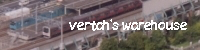

リンク集
いつもお世話になっている作者の方、大作を作り上げている方のサイトを紹介いたします。 当サイトへリンクを張るのは大歓迎です。ただしホームに張っていただくようお願いいたします。リンクは下の物をご利用ください。 また、相互リンクご希望の方は何らかの方法でお問い合わせください（Twitterが早いです）。| バナー | 管理人 | 説明 |
|---|---|---|
| Mackoy様 | この素晴らしいソフトを開発されている方。軽量化、一人でも多くの人に楽しんでもらえることを考えておられ、やさしさが垣間見えます。 | |
| しゃとる様 | BVE界の巨匠といっても差し支えない方。路線、車両ともに最高のクオリティー。何度でも遊びたくなります。 | |
|  | Vertah様 | Bveで各種車両データを公開している方。しゃとるさんとのペアが多いみたいです。 |
| しゃろー様 | 主に西武線関連を作っているプロの方。福岡なども公開されており、その活動力の広さには驚かされます。 | |
| 海芝様 | bveで東武線を作ってる方。今は分断されてますが、将来はつなげるそうです。それにしても駅の再現がすごいなあ… | |
| うみきゅう様 | BVEで小田急線を作っている方。当方の車両も指定いただいております。遠近両方ともリアルな再現に驚かされます。 | |
| むさしのチャンネル様 | 「トレインビジョン界の巨匠」。この方のスクリプトがなければトレビ制作は難しかったでしょう。また、大物なのにもかかわらず、リプ1つ1つに返信を返していらっしゃって、その気配りには尊敬します。 | |
| わかめ太郎さん | 相互リンク。高1で西武池袋線を作ってるすごい方。こんな人とでも親しくしてくれるいい人です。撮り鉄だとか。 | |
| ニッシーさん | 相互リンク。西武線のトレインビジョンを作ってる方。仕事の速さにはとても尊敬します。僕もこれくらい早く仕事を終わらせたい…。 |